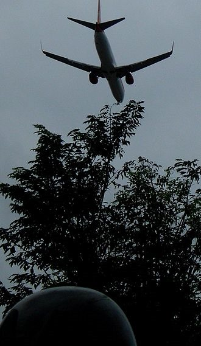

Point Penting
Permulaan
Awalnya, area bandara ini merupakan kawasan hutan dan rawa di pesisir pantai Sepinggan. Pada tahun 1920-an, Belanda membangun lapangan terbang sederhana di Sepinggan untuk mendukung kegiatan eksplorasi minyak di Kalimantan Timur. Lapangan terbang ini kemudian diperluas dan ditingkatkan fungsinya selama beberapa dekade, terutama setelah kemerdekaan Indonesia.
Read MorePerkembangan
Pada tahun 1987, Bandara Sepinggan resmi dioperasikan sebagai bandara udara komersial. Pada tahun 1991, bandara ini mengalami perluasan besar-besaran untuk mengantisipasi lonjakan penumpang dan kargo. Pada tahun 1995, Bandara Sepinggan ditetapkan sebagai bandara embarkasi haji untuk wilayah Kalimantan.
Read MoreEra Modern
Pada tahun 1997, Bandara Sepinggan resmi diresmikan oleh Presiden Soeharto. Pada tahun 2000-an, bandara ini terus mengalami pengembangan dan modernisasi, termasuk pembangunan terminal baru dan perluasan landasan pacu. Pada tahun 2013, Bandara Sepinggan berganti nama menjadi Bandar Udara Internasional Sultan Aji Muhammad Sulaiman Sepinggan untuk menghormati Sultan Aji Muhammad Sulaiman, raja terakhir Kesultanan Kutai Kartanegara. Saat ini, Bandara Sepinggan telah menjadi bandara internasional yang sibuk dan modern, melayani penerbangan domestik dan internasional ke berbagai kota di Indonesia dan dunia. Bandara ini juga telah meraih berbagai penghargaan, termasuk Bandara Terbaik di Asia Pasifik dari Airport Council International (ACI)
Read MoreFakta Menarik
Nama "Sepinggan" berasal dari bahasa Kutai yang berarti "satu piring". Bandara Sepinggan memiliki museum yang menceritakan sejarah bandara dan budaya Kalimantan Timur. Bandara ini terkenal dengan arsitekturnya yang unik, yang terinspirasi dari rumah adat Kalimantan
Read MorePenghargaan
Airport Service Quality (ASG) Award tahun 2018, 2019, 2020 dalam hal pelayanan kategori kapasitas penumpang 5-15 juta penumpang per tahun dengan partisipasi 115 bandara di lingkungan Asia Pasifik, diberikan oleh Airports Council Internasional.
Read MorePermasalahan
Kebisingan Pesawat melintas di atas lalu lintas Jalan Mulawarman ketika akan mendarat. Bandar Udara Internasional Sultan Aji Muhammad Sulaiman Sepinggan dituntut warga Sepinggan karena tingkat kebisingan yang tinggi. Studi Universitas Indonesia menyatakan kebisingan Bandar Udara Internasional Sultan Aji Muhammad Sulaiman Sepinggan mengakibatkan 9% penduduk Sepinggan dan Gunung Bahagia menderita ketulian dan sulit berkomunikasi. Mayoritas mengalami sulit tidur, berkomunikasi dan pendengaran. 
Read MoreKerugian Finansial
Sebelum pandemi melanda, bandara ini telah mengalami kerugian diantaranya keterisian area komersial bandara hanya 59% ditambah pinjaman dana serta beban bunga pinjaman yang nominalnya tidak sedikit. Bandara ini juga terlibat persaingan dengan Bandara Internasional Samarinda.
Read MoreQuote
"Bandara Sultan Aji Muhammad Sulaiman, pintu gerbang Balikpapan yang tak hanya menghubungkan kita dengan dunia, tetapi juga mengingatkan akan kejayaan sejarah dan warisan leluhur yang harus kita jaga dan lestarikan."
Let's Get In Touch!
Contact Us